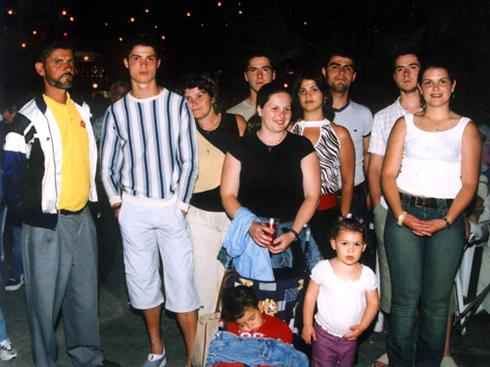
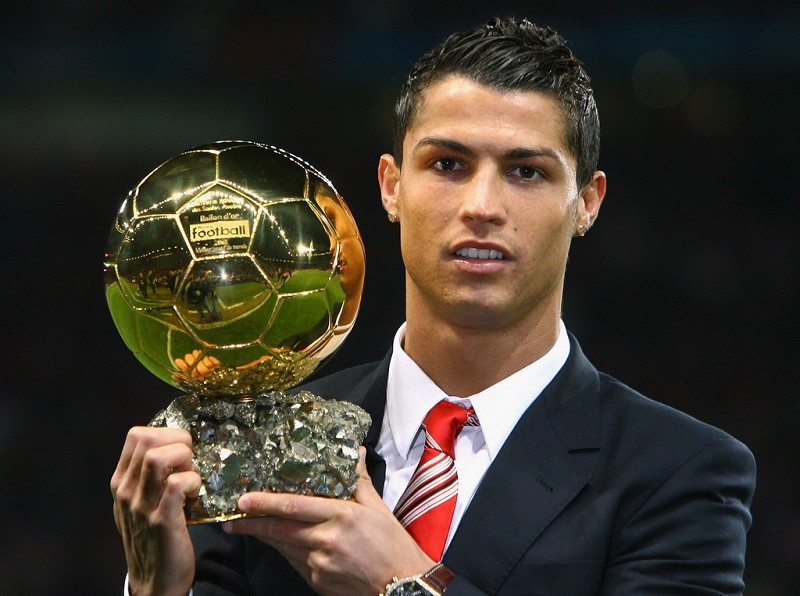
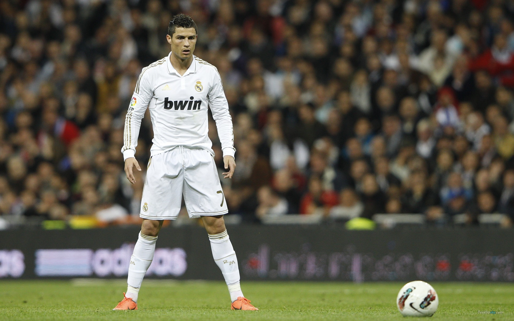
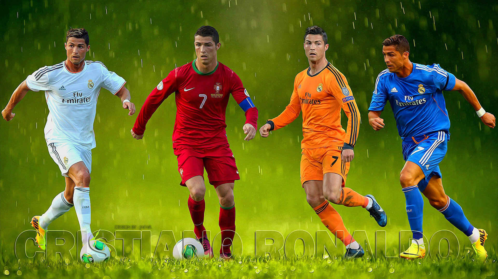

C罗
克里斯蒂亚诺·罗纳尔多·多斯桑托斯·阿维罗（葡萄牙语：Cristiano Ronaldo dos Santos Aveiro，1985年2月5日－），生于葡萄牙丰沙尔圣安托尼奥，简称为“C罗”，司职边锋、中锋。现效力于西甲球队皇家马德里，同时也是现任葡萄牙国家队队长。
克里斯蒂亚诺·罗纳尔多·多斯桑托斯·阿维罗（葡萄牙语：Cristiano Ronaldo dos Santos Aveiro，1985年2月5日－），生于葡萄牙丰沙尔圣安托尼奥，简称为“C罗”，司职边锋、中锋。现效力于西甲球队皇家马德里，同时也是现任葡萄牙国家队队长。
C罗于18岁时已加盟英超豪门曼联，于2006年世界杯时扬名，效力曼联6个赛季为球队赢尽所有锦标，也获得不少个人奖项。其中在2007-08年赛季，个人入42球，超越了曼联前中场乔治·贝斯特的纪录，亦成为欧洲足球先生和世界足球先生，是首个在英超诞生的世界足球先生。他于2009年以破世界纪录的9600万欧元加盟皇家马德里，C罗因此成为了当时历史上转出最高身价的球员。此后连续首五场赛事都有进账，是皇马在1902年3月6日成立以来，新加盟皇马的球员中，首位连续五场赛事都有进账的球员。C罗效力皇家马德里三赛季进球效率惊人，代表皇马144场比赛、攻入146球、37次助攻、以场均1.02球的进球率成为皇家马德里历史上进球率最高的球员，同时也是皇家马德里史上用最少的时间即92场比赛就打进了100球的球员；同时，他亦是国家德比史上首位连续六场赛事都有进账的球员，超越己队名宿萨莫拉诺的五场纪录。2012年5月，C罗成为第一个在西甲单赛季对每支球队都有进球的球员。2013/14赛季欧洲冠军联赛，C罗帮助皇马获得冠军以及西班牙国王杯冠军，他凭借本赛季的出色表现获得了欧洲金靴、欧联金靴、西甲金靴等，其中以17球创造欧冠史上个人单季最多进球的纪录。
在葡萄牙国家队，C罗是第一个进球数达到50个国际进球的葡萄牙球员，超越了保莱塔和尤西比奥，他亦是有史以来葡萄牙球员中，包括现役及退役球员当中，最多国家队进球的一位。2011年及2012年，C罗两度获得国际足联金球奖第二名；2013年，C罗力压梅西和里贝里，继2008年后，第二度获得球坛改制后的个人最高荣誉——国际足联金球奖。2014年8月29日，C罗夺得欧洲足联最佳球员。2015年，C罗力压梅西和诺伊尔，第三度获得球坛个人最高荣誉国际足联金球奖。
除了球员的身分外，C罗和另一位前曼联球星大卫·贝克汉姆一样，C罗的明星效应及其代言大量周边产品、广告及肖像权等等，使他成为全球最高薪球员之一。

1985年2月5日，C罗生于葡萄牙马德拉岛丰沙尔的圣安托尼奥。母亲Maria Dolores dos Santos Aveiro 是一位厨师；父亲José Dinis Aveiro是一位花匠。他名字中的"Ronaldo"是其父根据曾当演员的美国前总统罗纳德·里根的名字Ronald命名的，后者是其父最喜欢演员。 他是父母最年幼的孩子，上面有一位兄长Hugo；还有两位姐姐：Elma与Liliana Cátia。其曾祖母Isabel da Piedade来自佛得角。
里斯本竞技
C罗出身于葡萄牙著名球队里斯本竞技，当时他凭籍优秀盘扭技术扬威国内。在2003-04年赛季前，凭著里斯本竞技的出色发挥下，里斯本竞技在对阵曼联的友谊赛中以3-1击败对手。C罗亦因而引来曼联教练弗格森的注意。弗格森最后以1,224万英镑转会费罗致C罗，取代刚转会皇家马德里的大卫·贝克汉姆成为曼联“7”号球衣的新主人。
曼联
2003/04赛季
加入曼联后，C罗主要担任右翼的角色，亦不时参与左路的进攻。曼联在2003-04年联赛揭幕战对博尔顿时，C罗后备替补并首次为曼联上场。他一上场便发挥他快速的盘扭协助球队大胜4-0。在2004年英格兰足总杯决赛中，他首开纪录，并以出色表现为曼联取得3-0的胜利。2003-04赛季C罗在各项比赛中出场39次，并在对米尔沃尔的足协杯决赛中首开纪录，为曼联捧杯立下头功。赛季末，C罗被曼联球迷票选为俱乐部“巴斯比爵士最佳球员奖”。
2004/05赛季
在曼联的第二季，C罗不断成长，并协助曼联在海布里球场以4-2击败前一届英超联冠军阿森纳，比赛中他攻入两个进球。
尽管如此，但由于C罗的踢法在加盟曼联首两季偏向个人主义，极之独食及经常插水，与曼联一向强调的整体踢法格格不入，故此当时曼联球迷对其评价是毁誉参半。直到C罗自2006-07赛季起，踢法逐渐融入整体战术，加上进球率上升，使得曼联重夺失落数季的联赛冠军，而C罗亦从此广为曼联球迷所爱戴。
2005/06赛季
2005-06赛季捧回了联赛杯。2006年，他入选英超最佳阵容，荣获国际职业球员协会最佳新人，当选葡萄牙年度体育名人，曼联的新7号正在路上。
2006/07赛季
C罗于2006-07年赛季表现日渐成熟。在第一场曼联对富勒姆的比赛中，罗纳尔多接应鲁尼的传中攻破富勒姆的大门，助球队大胜5-1，粉碎了自世界杯以后他与鲁尼不和的传闻。他除了频频助攻之外，亦成为球队的点球刽子手。他的进球能力更是突飞猛进，无论是点球、远射、任意球抑或是头锤攻门均能取得进球，甚至于连续三场联赛赛事梅开二度。赛季最终他一共攻入23球，与鲁尼并列球队最佳射手，而且其中有17个英超联赛进球，成为英超有史以来其中一位进球最多的中场球员。
不过关于他的转会传闻始终未有停止，西甲强队皇家马德里常被传欲罗致罗纳尔多。2007年4月13日C罗签订5年新约继续留效曼联。4月23日，在06/07赛季PFA最佳球员和最佳年青球员的评选中，C罗分别力压德罗巴与法布雷加斯夺奖。C罗是30年以来首位包揽这两个奖项的球员。5月4日，他又获得足球记者协会的英格兰足球先生，成为史上第一个同获此三项殊荣的球员。
2007/08赛季

曼联首循环对伯明翰城攻入一球后，C罗的进球潮一发不可收拾，并成为07/08赛季四大联赛以中场球员的身份第一位率先打破20球大关的球员，而他更在主场对纽卡斯尔联的比赛中上演在曼联足球生涯的第一次帽子戏法，助球队以6:0大胜纽卡斯尔联。本赛季他一共攻入了42球，并几乎获得了所有个人荣誉，包括曼联年度最佳球员、英超最佳十一人、英超最佳射手、英超最佳球员、巴克莱银行（英超官方赞助商）赛季最佳球员、英格兰球员先生、PFA英格兰足球先生、FWA英格兰足球先生、欧洲金靴奖（欧联最佳射手）、欧洲冠军联赛最佳射手、欧洲足联俱乐部最佳前锋、欧洲足联俱乐部最佳球员、《队报》欧洲年度最佳阵容、拉美媒体评年度欧洲最佳球员、FIFPro年度最佳十一人及年度最佳球员、《世界足球》年度最佳球员，并帮助球队获得了联赛、欧冠冠军两项最重要的赛事冠军。
2008年度，C罗囊括了金球奖、国际足联世界足球先生、欧洲金靴奖三项足坛顶级个人荣誉，是继巴西球星罗纳尔多之后的第二人。但是在其它荣誉和团队冠军方面，他则远远超过了罗纳尔多，获得了联赛冠军、联赛最佳射手、欧冠冠军、欧冠最佳射手、英格兰联赛的两个足球先生等等，总计22个荣誉，是世界足坛史无前例的大满贯。
2008/09赛季
赛季前，C罗受到皇家马德里等球队青睐，C罗曾有意转投，后来在会方的游说下决定留队。C罗在开季时养伤近一个月，其后在9月17日的欧联小组赛对比利亚雷亚尔时复出。9月24日，他在英格兰联赛杯对米德尔斯堡中射入他在该季首个进球。11月15日，C罗通过任意球射入了自己在曼联的第100个进球。3月1日，他助曼联获得英格兰联赛杯。4月15日，他在对波尔图的欧联八强中射入一记40多码的世界波，时速更达103km/h，不但令曼联晋级四强，还得到弗格森的称赞﹔罗纳尔多亦凭着这个进球夺得2009年国际足联普斯卡什奖。其后，曼联连续三年夺得联赛冠军。可惜，曼联在欧联决赛中0:2输给巴塞罗那，未能成为在欧联改制后首支连夺两次冠军的球队。赛后，C罗承认巴萨踢得较曼联好。
同时，皇家马德里再次向罗纳尔多招手。曼联在6月10日宣布接受皇家马德里破世界纪录的8000万英镑开价。C罗签约6年，周薪大约20万英镑，为当时全球最高。
皇家马德里
2009/10赛季

2009年6月26日，皇家马德里官方确认C罗将于7月1日以8,000万英镑转会费加盟皇马，年薪高达1,100万欧罗。C罗因此一举成为拥有最高单笔与累计转回金额双料世界纪录的足球运动员。7月6日，C罗正式以皇马球员身份在伯纳乌球场亮相，展示他的9号球衣，受到在场80,000名球迷热烈欢迎，场面震撼，打破了1984年马拉多纳受意甲俱乐部那不勒斯75,000名球迷欢迎的纪录。
到皇马后，他的进球潮一发不可收拾：C罗首次代表皇马，在主场对拉科鲁尼亚的西甲赛事中射入一球点球，2009-10年赛季的首五场的西甲赛事，C罗均有进账，但他在11月时因伤缺阵了一个月。在欧联，直至两场小组赛，他连续两次梅开二度。带领皇马以C组首名晋级八分之一决赛，但正在八分之一决赛，皇马以总比分1-2败给里昂出局。C罗在西甲出场29次，轰入惊人的26球，交出7次助攻。虽然最终皇马以破纪录的96分，创下皇马在西甲联赛的最高积分，但巴塞罗那有99分，皇马无缘西甲锦标。
2010/11赛季
劳尔离队后，C罗改穿7号球衣，而他原本穿的9号球衣由本泽马取代。随着穆里尼奥上任皇马教练后，C罗在皇马的成绩更突出，2010年10月23日，C罗在皇马对桑坦德的赛事中攻入4球，职业生涯第一次“大四喜”，协助球队6-1大胜。
2011年1月9日，C罗再度完成连中三元，并助攻复出不久的卡卡于复出后伯纳乌取得进球。这场比赛后，C罗18场联赛射入22球，令他很大机会打破38球的联赛进球纪录。另外，因为他的助攻，外界认为他全面的表现对球队有巨大的影响力。同年3月17日，C罗协助皇马打破七年欧冠杯八分之一决赛出局的魔咒，以3-0淘汰里昂，总比分以4-1击败对手，带领皇马七年来首度跻身欧冠杯八强﹔另外，他还协助皇马晋级该赛季西班牙杯决赛，在决赛加时103分钟更攻入一球，以1-0击败死敌巴塞罗那，协助皇马18年来首次问鼎这项赛事，亦打破了皇马近三年的锦标荒﹔5月7日，C罗在皇马对塞维利亚的西甲赛事中再攻入4球，职业生涯第二次“大四喜”，协助球队以6-2大胜对手。最后他以40球成为最佳射手并破前墨西哥传奇射手乌戈·桑切斯效力皇马时期创造的西甲进球纪录，并以史上最高的80分评分获得了2011年度的欧洲金靴奖，这也是C罗职业生涯第二次获得该奖项。
2011/12赛季
2012年4月12日，C罗取得2011-12赛季第七次联赛帽子戏法，攻入个人该季联赛第40球，成为西班牙甲级联赛史上首位连续两季进球数量达40的球员。4月22日的联赛国家德比中，C罗射入奠胜球，助皇马以2-1击败巴萨，取得关键三分。他在该赛季的出色表现帮助皇家马德里提前两轮夺得了阔别长达3年的西甲联赛冠军，同时亦获得了该年度西甲联赛最佳球员奖。
2012/13赛季
2012年8月30日，皇家马德里队在西班牙超级杯两回合总比分4:4（客场2:3，主场2:1），客场进球多优势击败巴塞罗那，第9次夺得西班牙超级杯。C罗在西班牙超级杯中表现出色，两回合中攻入两粒进球，C罗脚后跟挑球“戏”皮克破门更是这届西超杯的经典，值得一提的是，C罗完成了对巴萨连续5场都有进球的壮举，比肩前皇马传奇萨莫拉塔成为史上第一人，在近年7场西班牙国家德比中，C罗打进了6粒进球，同时还是西甲史上第一位连续4场都在诺坎普进球的球员。
2013年2月3日，C罗在2012/13赛季西班牙足球甲级联赛第22轮对阵格拉纳达中回防角球，却不幸把球顶进了自家球门。由于距离球门近，而且速度快，皇马门将迭戈洛佩斯扑救不及。値得一提，这粒乌龙球是C罗职业生涯首粒乌龙球。有媒体戏称C罗完成了当家球星打破过西甲“所有”球队大门的一项纪录，包括自家球门。
2013年2月14日，C罗在欧洲冠军联赛16强首回合赛事，主场迎战曼联。是他加盟皇马后，首次倒戈老东家，这场赛事亦成为众人焦点，而最终这场赛事以1:1告终。罗纳尔多在这场赛事中攻入一球，这球堪称神奇，罗纳尔多以惊人的弹跳力及头槌功架顶入扳平一球，而防守罗纳尔多的艾拉只能目定口呆看着皮球直飞网内。有研究指C罗的弹跳力比一般的NBA篮球员跳得更高，主要原因是他的大腿和上身肌肉非常强壮有力，而C罗度有如此体质，是刻苦地在健身房练成的，可见成功非偶然。
2013年3月5日，C罗在欧洲冠军联赛16强次回合赛事，客场对阵曼联的比赛中再次成为众人焦点，因为这是他在转会皇家马德里之后第一次重回老特拉福德。比赛中C罗打进反超一球，帮助皇马以2：1的比分客胜曼联。值得注意的是，这位曼联旧将进球后，在74959名观众注视中，低头不语，冲着队友摆摆手，表示自己不庆祝。
2013/14赛季
C罗帮助皇马获得欧洲冠军联赛冠军和西班牙国王杯冠军，他凭借本赛季的出色表现获得了欧洲金靴、欧冠金靴、西甲金靴等，其中以17球创造欧冠史上个人单季最多进球的纪录。同季除了获颁金球奖外，C罗还再度赢得了Goal 50世界最佳球员奖。这是葡萄牙人第三次赢得该奖，以表彰他在2013-14赛季，他带领他的俱乐部赢得期待已久的第十个欧洲冠军杯的伟大表现。
2014/15赛季
季前的欧洲超级杯，C罗梅开二度，协助皇马2-0击败欧洲联赛盟主塞维利亚夺魁，自己则从恩师弗格森手中接过全场最佳球员奖项。摩纳哥当地时间8月28日黄昏，C罗当选欧洲最佳球员。
2015/16赛季
2016年4月2日，西班牙国家德比中，C罗84分钟C罗射进由巴禾把守的大门，取得致胜一球，皇马最后以2:1反胜巴萨，一报首循环输0:4之仇，并成功证明巴萨已成为中游、下游队伍之一。
2016年4月13日，欧洲冠军联赛8强次回合，皇家马德里在主场上演绝地反击，在首回合落后2球下，C罗大演帽子戏法，3:0大胜沃尔夫斯堡，两回合计以3:2惊险晋级。C罗不但带领球队晋身4强，并创下首位在2届欧洲冠军联赛都射入15球以上的球员；首位在一届欧洲冠军联赛造出3次帽子戏法的球员的欧洲冠军联赛纪录。
C罗现时是国家队队长，喜爱穿上7号球衣。他2003年8月代表葡萄牙国家队出赛，当时对哈萨克。2004年欧洲国家杯他随国家队出赛，首战为开幕战对希腊，他射入该场葡萄牙的唯一进球；在对荷兰的半决赛中更射入首个进球。不过值得惋惜的是，国家队最终在决赛功亏一篑，而C罗更在球场大洒男儿泪。其后C罗在2004年8月举行的雅典奥运会足球赛事再度代表葡萄牙。至2005年6月11日，他共为国家队出赛24次，取得8个进球。
令他真正扬威的是2006年世界杯。他在对伊朗的一场小组赛里射入一球，其后他还一路带领葡萄牙闯进四强。自此他的实力获得肯定，不少顶级俱乐部极力招揽这名球员，包括皇家马德里和巴伦西亚。C罗在世界杯期间还发生过一段小插曲。代表葡萄牙出赛的他于八强遇上英格兰和其曼联队友鲁尼。在下半场一次鲁尼的犯规之中，C罗被指怂恿球证，间接导致鲁尼出场。其后英格兰于互射点球之中不敌葡萄牙，更使克里斯蒂亚诺·罗纳尔多成为英格兰球迷攻击的对象。C罗曾为此一度要求转投皇家马德里，而巴伦西亚更欲出价2000万镑罗致。后因曼联极力挽留，C罗才继续留在曼联。
主教练斯科拉里在2007年2月把队长臂章交予他。这是因为前葡萄牙足协主席卡洛斯·席尔瓦的逝世，促使斯科拉里希望完成他的遗愿。卡洛斯·席尔瓦生前一直希望有一天能够看到克里斯蒂亚诺·罗纳尔多成为国家队队长，更曾经亲自要求斯科拉里这样做，而这个遗愿在他逝世后两天达成了。C罗于2007年2月6日对巴西国家队的友谊赛上以队长身份首发上场，当时他年仅22岁，其后藉2008年欧洲足球锦标赛完结而纽奴·戈麦斯淡出国家队后一直成为队长至今。但他自从09年2月对芬兰的友谊赛后有进球后，就一连16个月没有进球，表现备受批评。
2010年世界杯欧洲区预选赛，葡萄牙对匈牙利的赛事中，C罗助攻给萨默尔奥期间，扭伤右脚足踝。赛后，他证实要养伤一个月。虽然如此，但葡萄牙最后仍然以3-0净胜匈牙利。由于有伤在身，C罗该届世界杯表现平平。不过在2010年世界杯G组的小组赛对北朝鲜的赛事中，C罗终于在下半场进球，然而该进球亦带有幸运成分。而此次世界杯葡萄牙队最后只进入十六强，而克里斯蒂亚诺·罗纳尔多也仅有一个进球。
2012年欧洲足球锦标赛正赛期间，葡萄牙与荷兰、德国、丹麦等同居B组，该组也成为了公认的“死亡之组”。小组赛首场对阵德国，C罗虽有上佳表现，然而葡萄牙仍以0:1惜败。第二场对阵丹麦C罗屡次浪费进球良机。C罗于小组赛B组最后一场梅开二度，协助葡萄牙2:1战胜荷兰，成功从死亡之组中突围晋级。1/4决赛对阵捷克，在葡萄牙久攻不下的情形时，C罗于第79分钟接队友传中大力头球破门，最终葡萄牙1:0绝杀捷克晋级半决赛。半决赛对阵西班牙，两队于120分钟内战成0:0进入点球决战，最终葡萄牙仅以点球大战2:4负于西班牙，止步于欧洲杯四强。他的优秀表现获得了球迷广泛认可，同时也被欧足联官方评选为2012年欧洲杯最佳阵容。
2014年世界杯预选赛作客北爱尔兰的赛事中，C罗首次为国家队上演帽子戏法，协助球队赢4:2。但葡萄牙在此组被俄罗斯抢走首名跻身世界杯决赛周的机会，需要踢附加赛，结果在C罗包办四个进球的情况下，两回合计以4-2击败有埃瓦尔谦莫域在阵的瑞典，晋身决赛周，其中在次回合，C罗更再度上演帽子戏法，成为他重夺金球奖的关键。

2014年3月6日对喀麦隆的友谊赛事中，C罗攻入两球，以49球超越名宿保莱塔，成为国家队史上进球最多的球员。
2014年巴西世界杯，葡萄牙与德国、美国、加纳同居G组。C罗在世界杯比赛前遭受了左膝伤病的困扰，葡萄牙足协为C罗做了全面检查，确诊为“左大腿肌肉损伤以及左腿髌骨肌腱存在炎症”，关于他是否能出场比赛一直是媒体和球迷关注的话题，不过C罗还是带伤打满了世界杯三场小组赛。葡萄牙最终以0:4输给德国队、2：2打平美国队、2:1战胜加纳队，与美国队同积4分，但因为净胜球少于美国队而遗憾出局。本届世界杯葡萄牙队可谓“伤兵满营”，三场比赛6个换人名额是因为比赛中球员受伤的被迫换人，而C罗也仅是在本届世界杯中打进1球和1助攻。
早期刚出道的他善于高速带球突破，其中双脚快速的踩单车和变向过人是许多后卫的梦魇，当年年少气盛的他特别喜欢在比赛中秀各种花活和过于黏球常受众多批评，队友指责说他没适当的传球阻碍进攻，且过多的盘带往往导致丢球让对方球员有机会重新获得球权，喜爱大力抽射也是他的特点之一。
齐达内：“C罗某些方面比我还要强。”“C罗是个与众不同的球员，因为他能做到其他球员做不到的事情。”“在我眼中，C罗是个完美的球员，拥有很高的心理素质，他能为球队作出贡献。”
劳尔：“C罗工作时非常投入，现在世界上很难找到像他那般勤力、随和的球员了。”
罗纳尔迪尼奥：“C罗球技转趋成熟，他不再像以前般那么独食了。”
斯科拉里：“梅西很不错，但C罗更出色。梅西是巴萨队内公认的头号球星，但皇马不同。我感觉皇马其他球员对C罗的头牌地位并不太认可，但尽管如此，C罗还是踢出了足以媲美梅西的表现。因此，我认为最好的球员现在是C罗。”
比利：“C罗是一名不可思议的球员，他和罗宾奴皆有机会成为夺得世界杯的功臣之一。”
卡卡：“他和梅西是现今世界上影响力最大、最多粉丝的球员。”“他已用表现和行动证明他是世界第一，而且是物有所值的。”
穆里尼奥: “每一位教练都希望能够拥有像他一样出色的球员在阵。”“我相信C罗拿度的成就可以媲美前辈迪·斯蒂法诺、马拉多纳和比利。”
菲戈：“他已超越我，现在已成为世界上最出色的球员了！”
鲁尼：“无可否认，他是世界上最伟大的球员。”
路维：“他是世界上最出色的球员，毫无疑问。鲁尼是最出色的前锋，但克里斯蒂安是另外一种类型。他更有冲击力，能做更多的事情，并且每一次他给人带来的冲击都是非常大的。当你看他启动的时候，你不知道他下一步将做什么，但你知道肯定会发生什么。他总是非常有威胁，他是一个非常职业的球员，每时每刻都想着成为最佳。他是难以置信的。我对他充满尊敬。”
里皮：“他是一位有着很多特点的球员：能力、力量、射门、空中优势、关键战能力……他是世界上最出色的球员之一。最出色的？这很难说，但可以肯定他在前三之列。”
卡佩罗：“他是一位有着非常强能力的足球运动员，并且，当场上情况不妙时，所有人都认为他能在任何时候改变场上的局面。这就是为什么他更受依赖的原因”
博斯克：“克里斯蒂亚诺是一位非常高水平的球员。当下，他因为伤病而没有踢很多比赛。他踢的每一场比赛你都能看到他的表现。会有不好的表现或者出色的表现，但在对比利亚雷亚尔时，以此为例，他出现在所有的进攻当中。因此，他是世界上最出色的球员之一，而对于葡萄牙国家队，因为他们有罗纳尔多这样的球员，同样有机会赢得世界杯。”
邓加：“很难去评价谁是世界上最出色的球员。这需要去讨论很多情况，但克里斯蒂亚诺有非常强的能力，和卡卡一样。在一年之内球员们有着巅峰表现，而克里斯蒂亚诺拥有的表现是令人惊叹的。他是少数几位有着不平凡能力的球员之一。”
泰利：“他能做出现今球坛没有人做到的事。”“他是世界最佳球员，他状态正佳时实在没有多少人能抵挡。”
阿什利·科尔：“他是我面对过的对手中最难应付的一个。”
弗格森：“他是足球世界无可争议的最佳，别人都远不如他。他绝对比梅西还有卡卡要强得多。看看他的不可思议的数据。他无所不能，惊世骇俗。回顾他为我们效力的这6年，从没缺席过训练，这是比所有人都强的地方——他从不受伤。” “C罗是个出色、喜欢接受挑战的球员，他在曼联的贡献，我们永远不会忘记。”
郑大世：“C罗拿度比尤西比奥更厉害，无论技术或战术上都更出色。”
索高拿：“他和卡卡无疑是最出色、最抢眼的球员，面对他们是一大考验。”
伊瓜因：“他在场上十分勤力，就像一个不停转动的机器。”[28]
克鲁伊夫：“他比乔治贝斯特和丹尼斯罗更杰出、更有天赋，他是英超史上数一数二的球员。”
厄齐尔：“我跟皇马球员一起练习和比赛时，最令我震惊的是C罗拿度，他是一流的球员，我很期待和他一起上场。”
卢卡库：“C罗是我的榜样，我希望能重复他的足迹。”
皮克：“当初我加盟曼联的时候，C罗就是球队的头号球星，你可以想像一下，当时像我这种毫无经验的新人在更衣室有何地位？不过C罗却帮助我很多，我发誓，我永远不会说他的坏话。”
马塞洛：“俱乐部需要像C罗般专业的球员，而我们需要像他般难能可贵的队友。” “当你未曾和他合作时，你不会明白他的技术和性格。”
罗西基：“梅西与C罗拿度都是世界最佳球员，但若果要选择较出色的一位，我会选C罗拿度。”
费德勒：“C罗现在无疑是世界前五名之一，他在曼联踢出了一个非凡的赛季，打进了很多进球。”
博尔特：“若要我选择哪一位是世界最佳的球员，我会选他，因为他是我的朋友，我们多次谈论足球，我总是想希望可以向他偷师。”
格瑞斯·贝尔：“C罗是我的偶像，现代足球发生了很大的变化，你也需要有一天比一天优秀的表现，否则你就会在球场上被淘汰。就像C罗，他一直把握著改变和创新的机会，我想像他那样不断进步。”
俱乐部
曼联
俱乐部世界杯冠军（2008年）
欧洲冠军联赛冠军（2008年）
英格兰超级联赛冠军（2007年、2008年、2009年）
英格兰足总杯冠军（2004年）
英格兰联赛杯冠军（2006年、2009年）
英格兰社区盾冠军（2007年、2008年）
皇家马德里
西班牙甲级联赛冠军（2012年）
西班牙国王杯冠军（2011年、2014年）
西班牙超级杯冠军（2012年）
欧洲冠军联赛冠军（2014年）
欧洲超级杯冠军（2014年）
俱乐部世界杯冠军（2014年）
国家队
欧洲足球锦标赛亚军（2004年）
世界杯殿军（2006年）
个人
国际职业球员协会最佳青年球员（FIFPro）
2006年度葡萄牙最佳运动员
2007年度PFA年度最佳青年球员
2007年度英格兰足球先生
2007年度PFA足球先生
2007年度欧洲足球先生第二名
2007年度葡萄牙最佳运动员
2007年世界足球先生季军
2008年度PFA足球先生
2008年度英格兰足球先生
2008年英超联赛最佳射手
2008年、2013、2014年欧洲冠军联赛最佳射手
2008年、2011、2014、2015年欧洲金靴奖
2008年欧洲足联俱乐部最佳前锋
2008年、2014年欧洲冠军联赛最佳球员
2008年金球奖
2008年世界足球先生冠军
2009年欧洲足球先生第二名
2009年世界足球先生第二名
2009年国际足联普斯卡什奖
2011年、2014年、2015年西甲最佳射手
2012年、2013、2014年西甲最佳球员（迪史提芬奴奖）
2013、2014年度国际足联金球奖
2013/14年度欧洲最佳球员
Goal 50 世界最佳球员奖（2008年、2012年、2014年）
欧洲足球锦标赛年度最佳阵容（2004年、2012年）
欧洲足联年度最佳阵容（2004年、2007年、2008年、2009年、2010年、2011年、2012年、2013年）
金球奖 (11人杂志)(2008年、2013年）
国际足联年度最佳阵容（2008年、2009年、2010年、2011年、2012年、2013年、2014年）
科比·布莱恩特（英语：Kobe Bryant，1978年8月23日－）是一名已退役的美国NBA篮球传奇球星，普遍被认为是历史上最有资格与“篮球之神”迈克尔·乔丹(Michael Jordan)相提并论的球员。有“黑曼巴”、“小飞侠”之称。
勒布朗·瑞蒙·詹姆斯（英语：LeBron Raymone James，1984年12月30日－），生于美国俄亥俄州阿克伦，职业篮球运动员，现效力于NBA联盟克利夫兰骑士队，场上位置为小前锋。绰号为“小皇帝”。